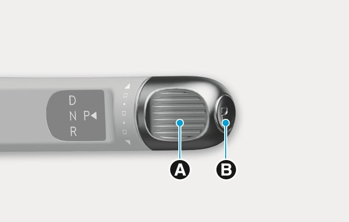
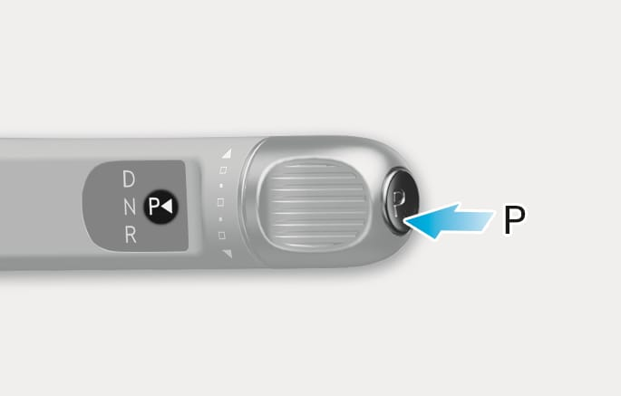
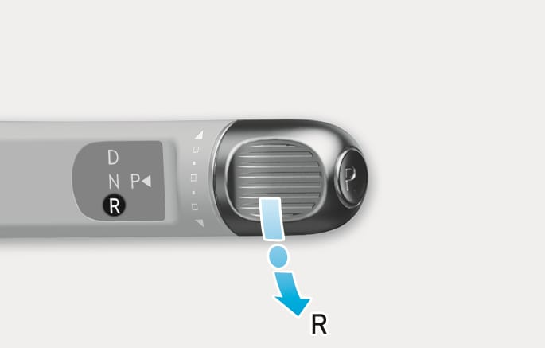
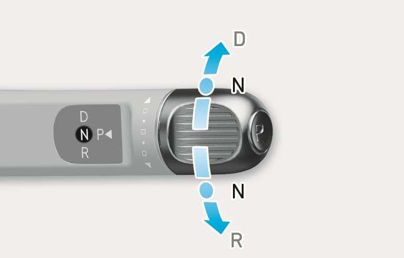
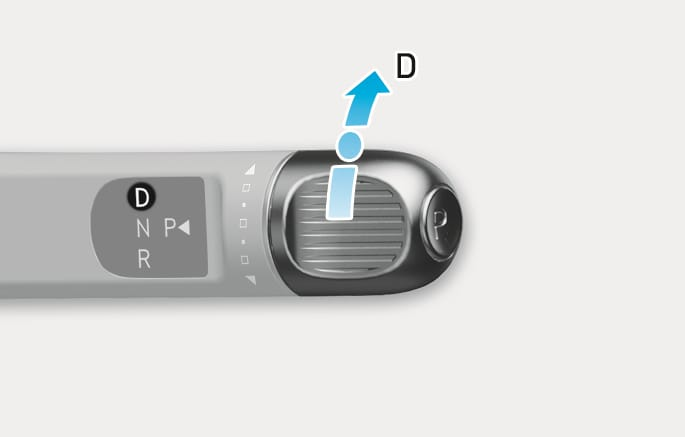

변속 위치 선택하기

2C_ShiftButtonOverview
- 변속 다이얼
- P 버튼
브레이크 페달을 밟은 상태에서 전자식 변속 다이얼을 조작하십시오.
변속 다이얼을 조작한 후에는 클러스터 또는 변속 다이얼의 변속 위치 표시기에 선택한 변속 위치가 표시되어 있는지 확인하십시오.

2C_PressPButton
주차 또는 시동 시 차량의 바퀴를 고정하기 위해 사용합니다.
브레이크 페달을 밟은 상태에서 P 버튼을 누르십시오.
-
갑작스런 차랑 이동으로 인한 사고를 방지하려면 주차 또는 정차 시 'P'(주차)로 변속한 후 주차 브레이크를 거십시오.
-
차량이 정지한 상태에서만 'P'(주차)로 변속하십시오. 차량이 움직일 때 'P'(주차)로 변속하면 감속기가 손상될 수 있습니다.
변속기 위치가 'R'(후진), 'D'(주행), 'N'(중립)일 때 시동을 끄면 자동으로 'P'(주차)로 변속됩니다.
'P'(주차) 자동 변속
다음과 같은 경우, 안전을 위해 자동으로 'P'(주차)로 변속됩니다.
-
'R'(후진), 'D'(주행), 'N'(중립) 상태에서 시동을 끄는 경우
-
시동이 켜져 있을 때 'R'(후진), 'D'(주행) 또는 'N'(중립)단에서 운전석 도어를 여는 경우
-
중립(N) 유지 모드 또는 시동 'ON' 상태에서 운전석 도어를 여는 경우
'P'(주차) 자동 변속 기능은 안전을 위한 보조 기능입니다. 'P'(주차) 자동 변속 기능에 의존하지 말고, 주차 시 차량이 'P'(주차)로 변속되어 있는지 반드시 확인하십시오.
변속 잠금 장치(Shift Lock) 알아두기
변속 잠금 장치는 운전자의 실수나 잘못된 조작을 방지하기 위한 기능입니다. 시동이 켜진 상태에서는 브레이크 페달을 밟고 있는 동안에만 변속 잠금이 해제되어 'P'(주차) 또는 'N'(중립) 상태에서 'R'(후진), 'N'(중립), 'D'(주행)로 변속할 수 있습니다.
배터리 방전 시 중립(N)으로 변속하기
배터리가 방전되면 전자식 변속 다이얼이 작동하지 않습니다.
비상시 견인 등을 위해 'N'(중립)으로 변속하는 방법 다음과 같습니다.
차량이 앞뒤로 미끄러질 우려가 없는 평지에서만 'N'(중립)으로 변속하십시오.
'N'(중립)으로 변속한 후에는 차량의 바퀴가 자유롭게 회전하므로 경사로에서 차량이 미끄러지면 심각한 사고가 발생할 수 있습니다.
-
차량이 평지에 있는지 확인하십시오.
-
점프 케이블을 이용해 타 차량의 배터리나 보조 배터리를 모터룸 내부의 점프 스타트 단자에 연결하십시오(8장 '비상 시동' 참고).
-
시동 'ON' 상태에서 브레이크를 밟고 주차 브레이크를 해제하십시오
-
브레이크 페달을 밟고 P 버튼을 눌러 'P'(주차)로 변속하십시오.
-
'P'(주차)로 변속 후 주차 브레이크가 자동으로 체결됩니다.
-
-
주차 브레이크와 AUTO HOLD 기능을 해제하십시오.
-
브레이크 페달을 밟은 상태에서 시동을 끄십시오.
-
브레이크 페달을 밟고 변속 다이얼을 한 단계 돌린 상태로 1초 이상 유지하십시오.
-
'N'(중립)으로 변속됩니다.
-
P 버튼을 누르면 다시 'P'(주차)로 변속할 수 있습니다.
-

2C_ShiftButtonRPosition
차량을 후진할 때 사용합니다.
차량이 완전히 멈춘 후에만 'R'(후진)로 변속하십시오.
브레이크 페달을 밟은 상태에서 변속 다이얼을 R 위치로 돌리십시오.
-
변속기 위치가 'R'(후진)인 상태로 정차해 있을 때 안전벨트를 풀고 운전석 도어를 열면 자동으로 'P'(주차)로 변속됩니다.
-
차량이 움직이고 있는 경우, 변속기를 보호하기 위해 'P'(주차)로 변속되지 않을 수 있습니다.
-
변속 다이얼의 회전 방향은 바퀴의 회전 방향과 동일합니다.

2C_ShiftButtonNPosition
차량의 시동이 켜져 있는 동안 차량을 동력으로부터 분리하기 위해 사용합니다.
브레이크 페달을 밟은 상태에서 변속 다이얼을 N 위치로 돌리십시오.
-
현재 위치가 'D'(주행)인 경우 변속 다이얼을 가볍게 아래로 돌리십시오(위로 돌리면 변속되지 않습니다).
-
현재 위치가 'R'(후진)인 경우 변속 다이얼을 가볍게 위로 돌리십시오(아래로 돌리면 변속되지 않습니다).
-
'N'(중립) 상태에서 시동을 끄면 자동으로 'P'(주차)로 변속됩니다.
중립(N) 유지 모드
2C_ToStayNPositionInfo
자동 세차기 사용 시 시동 'ACC' 상태로 'N'(중립)을 유지하고 싶은 경우 사용됩니다.
-
시동 'ON' 또는 시동이 켜진(
¢ ) 상태에서, 주차 브레이크와 AUTO HOLD 기능을 해제하십시오. -
브레이크 페달을 밟은 상태에서 'N'(중립)으로 변속한 후 브레이크 페달에서 발을 떼십시오.
-
스티어링 휠의
ũ 버튼[A]을 길게 누르십시오.-
클러스터에 안내 문구가 표시됩니다.

2C_SteeringWheelOkButton
-
-
클러스터에 '시동을 끈 후 N 단이 유지됩니다' 문구가 표시되면 시동을 끄십시오.
-
시동을 끄려면 시동 'ON' 또는 시동 상태에서 P 버튼을 눌러 'P'(주차)로 변속한 후 시동 버튼을 눌러 시동을 끄십시오.
-
시동 'ACC' 상태로 'N'(중립)이 유지됩니다.
-
-
중립(N) 유지 모드로 자동 세차기를 이용하는 경우, 시동을 끄고 3분이 지나기 전에는 운전석 도어를 열지 마십시오. 3분 이내에 운전석 도어가 열리면 차량이 'P'(주차)로 자동 변속되고 주차 브레이크가 체결되므로 차량 또는 자동 세차기가 손상될 수 있습니다.
-
중립(N) 유지 모드 사용 중 차량의 시동 상태는 'ACC'로 유지되므로, 다음 사항을 유의하십시오.
-
중립(N) 유지 모드를 장시간 유지하지 마십시오. 배터리가 방전될 수 있습니다.
-
시동 상태가 'ACC'일 때에는 도어가 잠기지 않습니다
-
중립(N) 주차
2C_ShiftButtonNPosition
이중 주차 시 외부에서 차량을 밀어 움직일 수 있도록 해야 할 때 사용됩니다.
-
시동 'ON' 또는 시동이 켜진 상태에서 브레이크 페달을 밟고 P 버튼을 눌러 'P'(주차)로 변속하십시오.
-
'P'(주차)로 변속 시 주차 브레이크가 자동으로 걸립니다.
-
-
시동 'ON' 또는 시동이 켜진(
¢ ) 상태에서, 주차 브레이크와 AUTO HOLD 기능을 해제하십시오. -
브레이크 페달을 밟은 상태에서 시동을 끄십시오.
-
브레이크 페달을 밟고 변속 다이얼을 한 단계 돌린 상태로 1초 이상 유지하십시오.
-
'N'(중립)으로 변속됩니다.
-
P 버튼을 누르면 다시 'P'(주차)로 변속할 수 있습니다.
-
-
중립(N) 주차 기능은 평지에서만 사용하십시오. 경사가 있는 곳에서 중립(N) 주차 기능을 사용하는 경우 차량이 움직이며 심각한 사고가 발생할 수 있습니다.
-
주차 시 안전을 위해, 반드시 필요한 경우 외에는 'P'(주차)로 변속하고 주차 브레이크를 체결하십시오.
시동을 끈 후 3분 이내에만 'N'(중립)과 'P'(주차) 간 변속이 가능합니다.

2C_ShiftButtonDPosition
차량을 전진할 때 사용합니다.
브레이크 페달을 밟은 상태에서 변속 다이얼을 D 위치로 돌리십시오.
-
차량이 완전히 멈춘 상태에서 변속하십시오.
-
차량을 출발하려면 'P'(주차)에서 시동을 걸고 브레이크 페달을 밟은 상태로 'D'(주행)로 변속하십시오. 이후, 브레이크 페달에서 발을 떼면서 차량이 서서히 움직이는 것을 확인하고 가속 페달을 천천히 밟아 출발하십시오.
-
주행 중 도로 상황에 따라 회생 제동 시스템이 자동으로 작동합니다.
-
변속기 위치가 'D'(주행)일 때 차량이 정차해 있는 동안 운전석 도어가 열리면 자동으로 'P'(주차)로 변속됩니다.
언덕에서 차를 멈추었다 출발할 때, 변속기 위치가 'D'(주행)이더라도 가속 페달이나 브레이크 페달을 밟지 않으면 차량이 뒤로 움직여 심각한 사고가 발생할 수 있으므로 주의하십시오.
주행 중 차량을 잠시 멈추는 경우, 브레이크 페달을 세게 밟지 않으면 차가 움직일 수 있으니 주의하십시오.